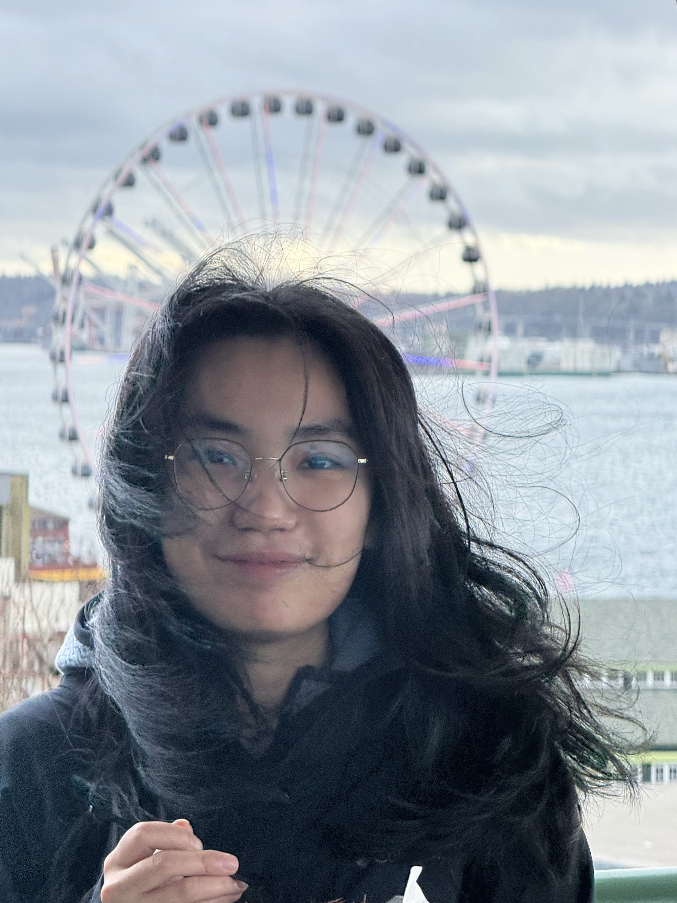

Yuhui Hong
Postdoctoral Scholar at Noble Lab (2025 - Present)
University of Washington
Advised by Professor William Stafford Noble
Ph.D. in Computer Science (2020-2025)
Indiana University Bloomington
Advised by Professor Haixu Tang
I'm a postdoctoral researcher at the University of Washington working in computational mass spectrometry. Molecules leave signals — fragmentation spectra, retention times, collision cross sections — but reading those signals back into structure is messy, ambiguous, and short on labeled data. I build machine learning models that identify molecules no reference library has seen before.
Please feel free to get in touch!
News
- 03/09/2026 Our work, De novo sequencing of chimeric spectra using Casanovo, has been selected for an oral presentation at ASMS 2026, San Diego.
- 02/11/2026 Invited to give a seminar talk at San Diego State University.
- 11/29/2025 Koina is published in Nature Communications, with 3DMolMS available as one of its models.
- 09/19/2025 Awarded the UW Data Science Fellowship at eScience Institute, University of Washington.
- 07/07/2025 I will join Noble Lab at University of Washington as a Postdoctoral Scholar in August 2025.
- 05/09/2025 Recipient of the Luddy Outstanding Research Award.
- 03/04/2025 Our work, A Task-Specific Transfer Learning Approach to Enhancing Small Molecule Retention Time Prediction with Limited Data, has been selected for an oral presentation at ASMS 2025, Baltimore.
Research interests
-
Forward: structure to measurementPredicting how molecular structure gives rise to measurable signal: 3D-aware representations that predict spectra and physicochemical properties such as fragmentation, retention time, and chiral separation, building in-silico libraries that extend database search to compounds never measured and illuminate the "dark matters" of chemical space.3DMolMS (Bioinformatics, 2023; Nature Communications, 2025) · 3DMolCSP (Analytical Chemistry, 2024) · TSTL (bioRxiv, 2025)
-
Inverse: measurement back to structureRecovering molecular and peptide structure directly from spectra without a reference library: machine learning methods for small-molecule identification and de novo peptide sequencing, extending identification beyond the reach of spectral databases.FIDDLE (Nature Communications, 2025) · De novo peptide sequencing (in progress, Noble Lab) · Machine learning in small-molecule mass spectrometry (Annual Review of Analytical Chemistry, 2025)
-
Trustworthy inference: knowing when to believe the answerEnsuring that inferences are not just accurate but statistically and mechanistically accountable: controlling false discovery rates in molecule and peptide identification, and building interpretable models robust to confounders for reliable biomarker discovery and clinical decision-making.MicroKPNN-MT(Bioinformatics Advances, 2024) · MicroKPNN-CF(bioRxiv, 2025) · False discovery rate control for de novo identification (in progress, Noble Lab)
Selected publications
A few representative papers. For the complete list, please see my Google Scholar profile.
FIDDLE: a deep learning method for chemical formulas prediction from tandem mass spectra
Nature Communications, 16(1), 11102.
Machine learning in small-molecule mass spectrometry
Annual Review of Analytical Chemistry, 18.
Koina: democratizing machine learning for proteomics research
Nature Communications, 16(1), 9933.
Enhanced structure-based prediction of chiral stationary phases for chromatographic enantioseparation from 3D molecular conformations
Analytical Chemistry, 96(6), 2351–2359.